Kuantifikator (Quantifiers)
Memahami konsep logika predikat, kuantifikasi universal, kuantifikasi eksistensial, domain yang dibatasi, negasi kuantor, serta kuantor tunggal dan bersarang (double quantifier).
Kenapa Butuh Kuantifikator?
Pada materi logika dasar (Sesi 1), kita telah mempelajari operator logika seperti DAN (AND), ATAU (OR), JIKA-MAKA (Implikasi), dan Biimplikasi. Namun, logika proposisional dasar tersebut tidak cukup untuk merumuskan atau menggambarkan semua pernyataan yang ada di dunia nyata secara matematis.
Sebagai contoh, mari kita perhatikan argumen logika berikut:
Premis 1 (P1): "Ada raja yang tamak (serakah/rakus)."
Premis 2 (P2): "Semua yang tamak akan mati."
Apa kesimpulan yang tepat dari premis-premis di atas?
- (a) Ada raja yang akan mati.
- (b) Semua raja akan mati.
Dengan nalar logika biasa, kesimpulan yang tepat adalah (a) Ada raja yang akan mati. Kita tidak bisa menyimpulkan bahwa semua raja akan mati, karena premis pertama hanya menyebutkan "ada" (setidaknya satu) raja yang tamak, bukan "semua" raja.
Pernyataan "ada" dan "semua" inilah yang tidak bisa dinyatakan secara akurat menggunakan logika proposisional biasa. Kita membutuhkan Kuantifikator (Quantifier) untuk menyelesaikannya.
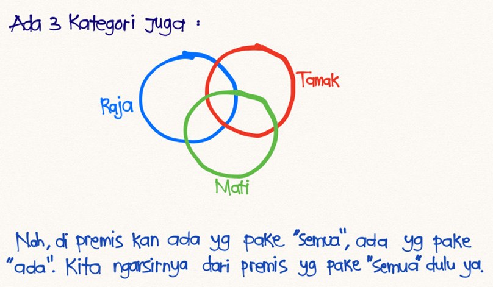
Premis: "Hanya orang kaya yang beli rumah."
Apa kesimpulan yang tepat dari premis tersebut?
- (a) Semua orang kaya membeli rumah.
- (b) Semua orang yang membeli rumah adalah orang kaya.
Jawabannya adalah (b) Semua orang yang membeli rumah adalah orang kaya. Kalimat "Hanya orang kaya yang beli rumah" menetapkan syarat bahwa jika seseorang membeli rumah, maka dia pasti merupakan orang kaya. Ini tidak berarti setiap orang kaya pasti membeli rumah (bisa saja ada orang kaya yang menyewa atau tidak mau beli rumah).
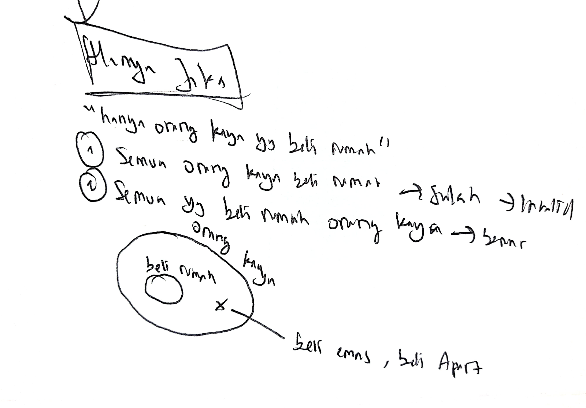
1. Logika Predikat & Fungsi Proposisional
Mari perhatikan pernyataan matematika berikut: $$x > 3$$ Pernyataan ini memiliki dua komponen utama:
- Subjek: Variabel $x$ yang merupakan objek pembicaraan.
- Predikat: Bagian "$> 3$" yang menyatakan sifat atau kriteria yang dimiliki subjek.
Kita dapat menyatakan pernyataan tersebut menggunakan fungsi proposisi $P(x)$, di mana predikat $P$ menerangkan properti "lebih dari 3". Fungsi $P(x)$ dinamakan Fungsi Proposisional (Propositional Function) atau kalimat terbuka. Fungsi ini belum memiliki nilai kebenaran sampai kita menyubstitusikan variabel $x$ dengan nilai tertentu dari suatu domain.
Misalkan $P(x)$ menyatakan pernyataan "$x > 3$". Tentukan nilai kebenaran dari proposisi $P(4)$ dan $P(2)$!
Kita memperoleh nilai kebenaran proposisi dengan menetapkan nilai $x$ pada predikat "$x > 3$":
- Untuk $P(4)$, substitusi $x = 4$ menghasilkan pernyataan "$4 > 3$", yang bernilai True (Benar).
- Untuk $P(2)$, substitusi $x = 2$ menghasilkan pernyataan "$2 > 3$", yang bernilai False (Salah).
Misalkan $A(x)$ menyatakan pernyataan: "Komputer $x$ sedang diserang oleh penyusup."
Jika dari semua komputer yang ada di kampus, hanya komputer CS2 dan MATH1 yang sedang diserang, tentukan nilai kebenaran dari $A(\text{CS1})$, $A(\text{CS2})$, dan $A(\text{MATH1})$!
- $A(\text{CS1})$: False. CS1 tidak ada dalam daftar komputer yang diserang.
- $A(\text{CS2})$: True. CS2 sedang diserang penyusup sesuai premis.
- $A(\text{MATH1})$: True. MATH1 sedang diserang penyusup sesuai premis.
Predikat juga dapat menampung lebih dari satu variabel (n-place predicate). Misalkan $Q(x, y)$ menyatakan pernyataan "$x = y + 3$". Apa nilai kebenaran dari proposisi $Q(1, 2)$ dan $Q(3, 0)$?
- Untuk $Q(1, 2)$, substitusikan $x = 1$ dan $y = 2$ ke dalam persamaan: $$1 = 2 + 3 \implies 1 = 5 \quad (\text{Salah / \bf{False}})$$
- Untuk $Q(3, 0)$, substitusikan $x = 3$ dan $y = 0$ ke dalam persamaan: $$3 = 0 + 3 \implies 3 = 3 \quad (\text{Benar / \bf{True}})$$
2. Kuantor Universal (Universal Quantifier) — $\forall$
Mengenal Simbol-Simbol Domain
Sebelum masuk lebih jauh, berikut adalah simbol domain bilangan yang sering digunakan dalam matematika diskrit:
- $\mathbb{R}$ → Bilangan Riil (Real Numbers): Seluruh nilai dari $-\infty$ sampai $+\infty$ (termasuk pecahan dan desimal).
- $\mathbb{Z}$ → Bilangan Bulat (Integers): $\{\dots, -2, -1, 0, 1, 2, \dots\}$.
- $\mathbb{N}$ → Bilangan Asli (Natural Numbers): Bilangan bulat positif dimulai dari 1 yaitu $\{1, 2, 3, \dots\}$.
- $\mathbb{W}$ → Bilangan Cacah (Whole Numbers): Bilangan asli yang menyertakan angka 0 yaitu $\{0, 1, 2, 3, \dots\}$.
Konsep Counterexample (Contoh Penyangkal)
Jika terdapat setidaknya satu elemen $x$ dalam domain yang membuat $P(x)$ salah, maka pernyataan universal $\forall x P(x)$ otomatis bernilai salah (False). Elemen penyangkal tersebut dinamakan counterexample.
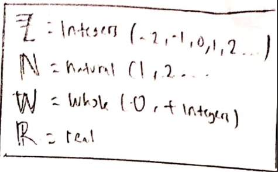
Tabel Kebenaran Kuantifikator
Kondisi nilai kebenaran untuk kuantor universal ($\forall$) dan kuantor eksistensial ($\exists$):
| Pernyataan (Statement) | Kapan Benar? | Kapan Salah? |
|---|---|---|
| $\forall x P(x)$ | P(x) benar untuk SETIAP nilai x dalam domain | Setidaknya ada SATU nilai x yang membuat P(x) salah (Counterexample) |
| $\exists x P(x)$ | Setidaknya ada SATU nilai x yang membuat P(x) benar | P(x) salah untuk SETIAP nilai x dalam domain |
Contoh Soal Kuantor Universal
Misalkan $P(x) = "x + 1 > x"$. Tentukan nilai kebenaran dari kuantifikasi $\forall x P(x)$ jika domainnya adalah semua bilangan riil ($\mathbb{R}$)!
Pernyataan ini bernilai True (Benar). Untuk setiap bilangan riil $x$ yang kita masukkan, nilai $x + 1$ pasti selalu lebih besar dari $x$ itu sendiri. Tidak ada satu pun angka riil yang bisa menyangkal hal ini.
Misalkan $Q(x) = "x < 2"$. Tentukan nilai kebenaran dari kuantifikasi $\forall x Q(x)$ jika domainnya terdiri dari semua bilangan riil ($\mathbb{R}$)!
Pernyataan ini bernilai False (Salah).
Penjelasan: Kita bisa menemukan counterexample (contoh penyangkal), yaitu dengan memilih $x = 3$. Ketika $x = 3$, pernyataan menjadi $Q(3) \equiv 3 < 2$, yang bernilai salah. Karena ada minimal satu elemen yang salah, maka kuantifikasi universalnya salah.
Apa arti pernyataan $\forall x N(x)$ jika $N(x)$ adalah "Komputer $x$ terhubung ke jaringan" dan domainnya terdiri dari semua komputer di kampus?
Pernyataan $\forall x N(x)$ berarti bahwa untuk setiap komputer $x$ di kampus, komputer $x$ tersebut terhubung ke jaringan. Dalam bahasa Indonesia sehari-hari, pernyataan ini dapat diterjemahkan sebagai: "Setiap komputer di kampus terhubung ke jaringan."
Tentukan nilai kebenaran dari $\forall x (x^2 \geq x)$ jika:
a) Domain terdiri dari semua bilangan riil ($\mathbb{R}$).
b) Domain terdiri dari semua bilangan bulat ($\mathbb{Z}$).
a) Untuk Domain Bilangan Riil ($\mathbb{R}$): False
Kita dapat mencari counterexample pada bilangan pecahan di antara 0 dan 1. Misalkan kita pilih $x = 0.5$.
Maka:
$$(0.5)^2 \geq 0.5 \implies 0.25 \geq 0.5 \quad (\text{\bf{Salah}})$$
Oleh karena itu, pernyataan bernilai salah pada domain $\mathbb{R}$.
b) Untuk Domain Bilangan Bulat ($\mathbb{Z}$): True
Tidak ada bilangan bulat $x$ yang memenuhi $0 < x < 1$ (di mana pertidaksamaan tersebut tidak berlaku). Untuk semua bilangan bulat negatif, nol, dan bilangan bulat positif $\geq 1$, nilai $x^2 \geq x$ selalu terpenuhi. Maka kuantifikasinya bernilai benar.
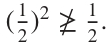
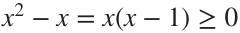
3. Kuantor Eksistensial (Existential Quantifier) — $\exists$
Misalkan $P(x) = "x > 3"$. Tentukan nilai kebenaran dari kuantifikasi $\exists x P(x)$ jika domainnya terdiri dari semua bilangan riil ($\mathbb{R}$)!
Pernyataan ini bernilai True (Benar).
Karena kita dapat menemukan setidaknya satu bilangan riil yang lebih besar dari 3, misalnya $x = 4$. Karena $P(4)$ bernilai benar, maka $\exists x P(x)$ bernilai benar.
Misalkan $Q(x) = "x = x + 1"$. Tentukan nilai kebenaran dari kuantifikasi $\exists x Q(x)$ jika domainnya terdiri dari semua bilangan riil ($\mathbb{R}$)!
Pernyataan ini bernilai False (Salah).
Penjelasan: Tidak ada satu pun bilangan riil yang nilainya sama dengan dirinya sendiri ditambah 1 ($x \neq x + 1$). Karena pernyataan $Q(x)$ bernilai salah untuk semua elemen dalam domain riil, maka kuantifikasi eksistensialnya salah.
4. Kuantor dengan Domain Dibatasi (Restricted Domain)
Pada bagian sebelumnya, domain yang digunakan adalah himpunan keseluruhan tanpa pembatasan (seperti semua bilangan riil atau bulat). Pada subtopik ini, domain didefinisikan dengan kondisi pembatasan tambahan secara eksplisit langsung setelah kuantor.
- Pernyataan $\forall x < 0 \, (P(x))$ dibaca: "Untuk setiap $x$ yang kurang dari 0, $P(x)$ benar." Ini ekuivalen dengan pernyataan: $$\forall x (x < 0 \rightarrow P(x))$$
- Pernyataan $\exists x > 0 \, (P(x))$ dibaca: "Ada setidaknya satu $x$ yang lebih besar dari 0 sehingga $P(x)$ benar." Ini ekuivalen dengan pernyataan: $$\exists x (x > 0 \land P(x))$$
Tentukan arti dan nilai kebenaran dari masing-masing pernyataan berikut jika domainnya terdiri dari semua bilangan riil ($\mathbb{R}$):
a) $\forall x < 0 \, (x^2 > 0)$
b) $\forall y \neq 0 \, (y^3 \neq 0)$
c) $\exists z > 0 \, (z^2 = 2)$
a) $\forall x < 0 \, (x^2 > 0)$
* Arti: "Untuk semua bilangan riil $x$ yang bernilai negatif (kurang dari 0), nilai kuadratnya lebih besar dari 0."
* Nilai Kebenaran: True, karena kuadrat dari bilangan negatif apa pun selalu menghasilkan bilangan positif ($> 0$).
b) $\forall y \neq 0 \, (y^3 \neq 0)$
* Arti: "Untuk semua bilangan riil $y$ yang tidak sama dengan 0, nilai pangkat tiganya tidak sama dengan 0."
* Nilai Kebenaran: True, karena satu-satunya bilangan riil yang jika dipangkatkan tiga menghasilkan 0 adalah 0 itu sendiri.
c) $\exists z > 0 \, (z^2 = 2)$
* Arti: "Ada bilangan real positif $z$ (lebih besar dari 0) sedemikian rupa sehingga $z^2 = 2$."
* Nilai Kebenaran: True, karena kita dapat memilih $z = \sqrt{2} \approx 1.414$, di mana $\sqrt{2} > 0$ dan $(\sqrt{2})^2 = 2$.
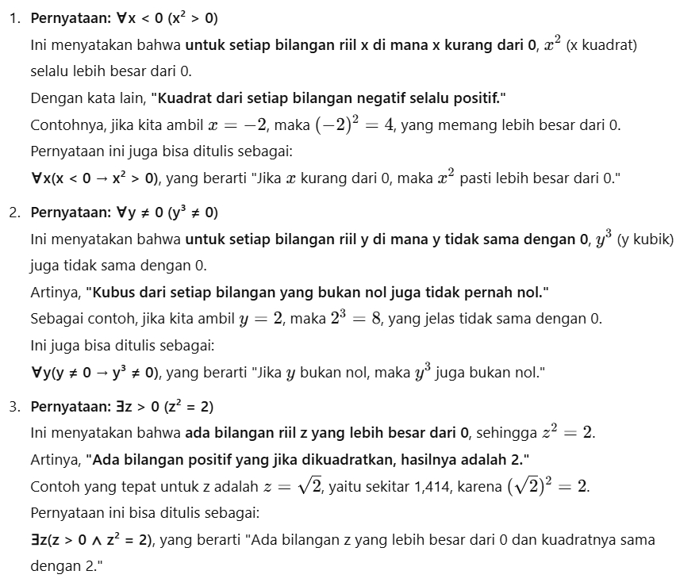
5. Menegasikan Kuantor (Negating Quantifier)
Menegasikan pernyataan berkuantor pada dasarnya adalah membuat pernyataan awal yang tadinya benar menjadi salah, atau yang salah menjadi benar. Aturan ini mengikuti versi kuantor dari Hukum De Morgan:
A. Menegasikan Kuantor Universal (Semua → Ada)
Misalkan kita memiliki pernyataan awal:
Pernyataan: "Semua cowok itu setia" → $\forall x P(x)$
Di mana domain $x$ adalah cowok, dan $P(x)$ artinya "$x$ setia".
Apa negasinya? Syarat apa yang membuat pernyataan "Semua cowok setia" menjadi salah? Pernyataan tersebut salah jika ada setidaknya satu cowok yang tidak setia. Maka: $$\neg \forall x P(x) \equiv \exists x \neg P(x)$$
B. Menegasikan Kuantor Eksistensial (Ada → Semua Tidak)
Misalkan kita memiliki pernyataan awal:
Pernyataan: "Ada orang yang suka nonton drama Korea" → $\exists x P(x)$
Di mana domain $x$ adalah orang, dan $P(x)$ artinya "$x$ suka drakor".
Pernyataan ini akan ternegasikan (salah) apabila semua orang tidak suka nonton drama Korea (atau tidak ada satu pun orang yang menyukainya). Maka: $$\neg \exists x P(x) \equiv \forall x \neg P(x)$$
Tabel Hukum De Morgan untuk Kuantor
| Negasi | Pernyataan Ekuivalen | Kapan Negasi Benar? | Kapan Negasi Salah? |
|---|---|---|---|
| $\neg \exists x P(x)$ | $\forall x \neg P(x)$ | Semua nilai x membuat P(x) salah | Ada setidaknya satu x yang membuat P(x) benar |
| $\neg \forall x P(x)$ | $\exists x \neg P(x)$ | Ada setidaknya satu x yang membuat P(x) salah | P(x) benar untuk semua nilai x |
6. Latihan Soal Kuantor Tunggal (Single Quantifier)
Kuantor tunggal hanya memiliki satu simbol kuantor ($\forall$ atau $\exists$) pada setiap pernyataannya. Kerjakan latihan soal di bawah ini untuk menguji pemahaman Anda:
Temukan himpunan kebenaran (truth set) untuk setiap fungsi proposisional $P(x)$ berikut yang didefinisikan pada himpunan $\mathbb{N}$ (bilangan bulat positif):
a) $P(x) = "x + 2 > 7"$
b) $P(x) = "x + 5 < 3"$
c) $P(x) = "x + 5 > 1"$
Domain $\mathbb{N} = \{1, 2, 3, 4, 5, 6, 7, 8, \dots\}$.
a) $x + 2 > 7 \implies x > 5$
Himpunan kebenarannya adalah $\{6, 7, 8, \dots\}$, yaitu semua bilangan bulat positif yang lebih besar dari 5.
b) $x + 5 < 3 \implies x < -2$
Karena domain adalah bilangan bulat positif ($\geq 1$), tidak ada nilai $x$ yang memenuhi $x < -2$.
Himpunan kebenarannya adalah himpunan kosong $\emptyset$.
c) $x + 5 > 1 \implies x > -4$
Semua anggota $\mathbb{N}$ bernilai $\geq 1$, sehingga pasti selalu lebih besar dari $-4$.
Himpunan kebenarannya adalah $\mathbb{N}$ (seluruh himpunan bilangan bulat positif).
Tentukan nilai kebenaran dari proposisi berikut jika domainnya adalah $\mathbb{N}$:
a) $(\forall n \in \mathbb{N})(n + 4 > 3)$
b) $(\forall n \in \mathbb{N})(n + 2 > 8)$
a) $(\forall n \in \mathbb{N})(n + 4 > 3)$ → Benar (True)
Pernyataan $n + 4 > 3$ ekuivalen dengan $n > -1$. Karena himpunan $\{n \mid n > -1\} = \{1, 2, 3, \dots\} = \mathbb{N}$, maka pernyataan ini benar untuk setiap elemen di $\mathbb{N}$.
b) $(\forall n \in \mathbb{N})(n + 2 > 8)$ → Salah (False)
Pernyataan $n + 2 > 8$ ekuivalen dengan $n > 6$. Himpunan kebenarannya adalah $\{7, 8, 9, \dots\} \neq \mathbb{N}$. Kita memiliki counterexample, seperti $n = 1$, di mana $1 + 2 = 3 \not> 8$.
Tentukan nilai kebenaran dari proposisi berikut jika domainnya adalah $\mathbb{N}$:
a) $(\exists n \in \mathbb{N})(n + 4 < 7)$
b) $(\exists n \in \mathbb{N})(n + 6 < 4)$
a) $(\exists n \in \mathbb{N})(n + 4 < 7)$ → Benar (True)
Pernyataan $n + 4 < 7 \implies n < 3$. Anggota $\mathbb{N}$ yang memenuhi adalah $n = 1$ dan $n = 2$. Karena himpunan kebenarannya $\{1, 2\} \neq \emptyset$, maka pernyataan eksistensial bernilai benar.
b) $(\exists n \in \mathbb{N})(n + 6 < 4)$ → Salah (False)
Pernyataan $n + 6 < 4 \implies n < -2$. Tidak ada bilangan asli $\mathbb{N}$ yang kurang dari $-2$. Karena himpunan kebrnahan $=\emptyset$, maka pernyataan bernilai salah.
Misalkan $A = \{1, 2, 3, 4, 5\}$. Tentukan nilai kebenaran dari setiap pernyataan berikut:
(a) $(\exists x \in A)(x + 3 = 10)$
(b) $(\forall x \in A)(x + 3 < 10)$
(c) $(\exists x \in A)(x + 3 < 5)$
(d) $(\forall x \in A)(x + 3 \leq 7)$
(a) Salah (False). Solusi dari $x + 3 = 10$ adalah $x = 7$. Karena $7 \notin A$, tidak ada elemen di $A$ yang memenuhi persamaan tersebut.
(b) Benar (True). Uji untuk semua nilai $x \in A$:
Jika $x = 5$ (nilai terbesar), $5 + 3 = 8 < 10$ (Benar). Maka otomatis berlaku untuk semua $x$ lainnya.
(c) Benar (True). Kita cukup mencari minimal satu nilai. Pilih $x = 1$, maka $1 + 3 = 4 < 5$ (Benar).
(d) Salah (False). Kita uji dengan $x = 5 \in A$.
Maka $5 + 3 = 8 \not\leq 7$. Anggota $x = 5$ merupakan counterexample yang merusak pernyataan universal.
Misalkan $P(x)$ adalah pernyataan "$x = x^2$". Jika domainnya terdiri dari semua bilangan bulat ($\mathbb{Z}$), tentukan nilai kebenaran dari proposisi berikut:
a) $P(0)$
b) $P(1)$
c) $P(2)$
d) $P(-1)$
e) $\exists x P(x)$
f) $\forall x P(x)$
- a) $P(0)$ → True (Benar), karena $0 = 0^2 \equiv 0$.
- b) $P(1)$ → True (Benar), karena $1 = 1^2 \equiv 1$.
- c) $P(2)$ → False (Salah), karena $2 \neq 2^2 \equiv 4$.
- d) $P(-1)$ → False (Salah), karena $-1 \neq (-1)^2 \equiv 1$.
- e) $\exists x P(x)$ → True (Benar), karena terdapat $x = 0$ dan $x = 1$ di domain yang membuat pernyataan benar.
- f) $\forall x P(x)$ → False (Salah), karena ada bilangan bulat yang tidak memenuhinya (contoh counterexample: $x = 2$).
Tentukan nilai kebenaran dari setiap pernyataan berikut jika domain terdiri dari semua bilangan bulat ($\mathbb{Z}$):
a) $\forall n (n + 1 > n)$
b) $\exists n (2n = 3n)$
c) $\exists n (n = -n)$
d) $\forall n (3n \leq 4n)$
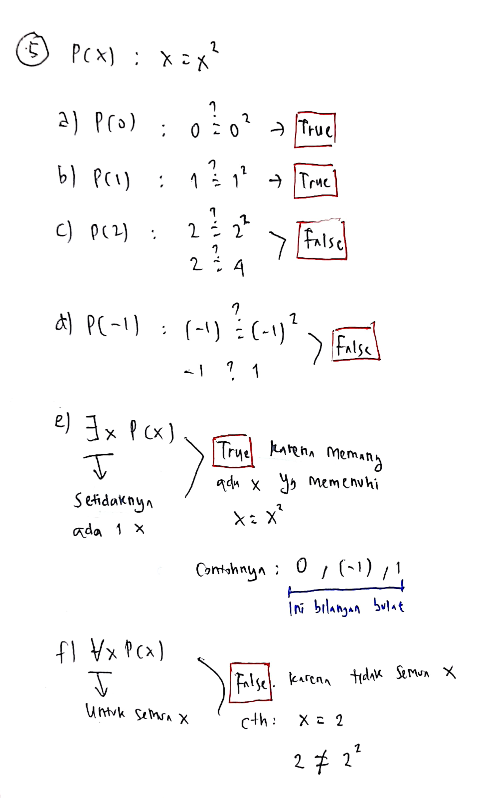
a) $\forall n (n + 1 > n)$ → True (Benar)
Berapa pun nilai bilangan bulat $n$, jika ditambahkan 1, hasilnya pasti lebih besar dari bilangan itu sendiri.
b) $\exists n (2n = 3n)$ → True (Benar)
Kita memiliki setidaknya satu nilai yang memenuhi, yaitu $n = 0$, karena $2(0) = 3(0) \equiv 0$.
c) $\exists n (n = -n)$ → True (Benar)
Terdapat nilai $n = 0$ yang memenuhi, karena $0 = -0$.
d) $\forall n (3n \leq 4n)$ → False (Salah)
Pernyataan ini salah ketika kita memilih bilangan bulat negatif.
Counterexample: Misalkan $n = -1$.
$$3(-1) \leq 4(-1) \implies -3 \leq -4 \quad (\text{\bf{Salah}}, \text{ karena } -3 > -4)$$
Tentukan nilai kebenaran dari setiap pernyataan berikut jika domain untuk semua variabel terdiri dari semua bilangan bulat ($\mathbb{Z}$):
a) $\forall n (n^2 \geq n)$
b) $\exists n (n^2 = 2)$
c) $\exists n (n^2 > n)$
d) $\forall n (n^2 > n)$
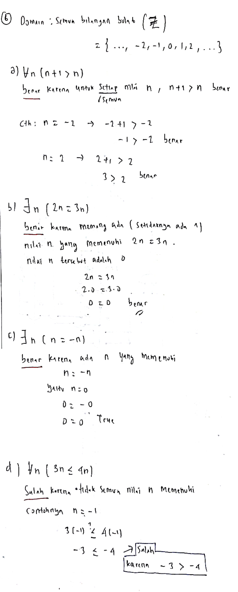
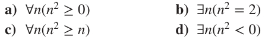
a) $\forall n (n^2 \geq n)$ → True (Benar)
Mari uji kelompok bilangan bulat:
- Bilangan negatif ($n < 0$): $n^2$ selalu positif, sedangkan $n$ negatif. Maka $positif > negatif$ (Benar).
- $n = 0$: $0^2 \geq 0 \implies 0 \geq 0$ (Benar).
- $n = 1$: $1^2 \geq 1 \implies 1 \geq 1$ (Benar).
- Bilangan bulat positif besar ($n \geq 2$): $n^2 > n$ selalu benar (contoh $2^2 = 4 > 2$).
b) $\exists n (n^2 = 2)$ → False (Salah)
Persamaan $n^2 = 2$ menghasilkan $n = \pm\sqrt{2}$. Karena $\sqrt{2}$ bukan merupakan bilangan bulat ($\mathbb{Z}$), maka tidak ada satu pun elemen domain yang memenuhi pernyataan ini.
c) $\exists n (n^2 > n)$ → True (Benar)
Kita cukup menunjukkan satu nilai. Pilih $n = 2$, maka $2^2 > 2 \implies 4 > 2$ (Benar).
d) $\forall n (n^2 > n)$ → False (Salah)
Kita cari counterexample. Jika kita pilih $n = 1$, maka $1^2 > 1 \implies 1 > 1$ (Salah).
Pernyataan juga salah untuk $n = 0$. Karena ada counterexample, pernyataan universal ini bernilai salah.
7. Kuantor Ganda / Bersarang (Double / Nested Quantifier)
- $\forall x \exists y P(x, y)$ → "Untuk setiap $x$, terdapat suatu nilai $y$." (Nilai $y$ yang dipilih bisa berbeda-beda tergantung nilai $x$).
- $\exists y \forall x P(x, y)$ → "Ada suatu nilai $y$ konstan yang berlaku untuk semua $x$." (Kita harus mencari satu nilai $y$ yang sama yang dapat dipasangkan dengan semua $x$).
Misalkan $B = \{1, 2, 3, \dots, 9\}$ dan $P(x, y)$ menyatakan predikat "$x + y = 10$". Tentukan nilai kebenaran dari:
a) $\forall x \exists y P(x, y)$
b) $\exists y \forall x P(x, y)$
a) $\forall x \exists y P(x, y)$ → True (Benar)
* Arti: "Untuk setiap $x$ dalam $B$, ada suatu nilai $y$ dalam $B$ sedemikian rupa sehingga $x + y = 10$."
* Analisis: Untuk setiap $x$ yang kita ambil, kita selalu bisa menemukan pasangan $y$ yang unik agar jumlahnya 10.
Jika $x = 1 \implies y = 9$ (keduanya anggota $B$).
Jika $x = 2 \implies y = 8$.
Jika $x = 9 \implies y = 1$.
Karena untuk setiap pilihan $x$, kita selalu bisa mencocokkan nilai $y$ yang ada di $B$, pernyataan ini bernilai benar.
b) $\exists y \forall x P(x, y)$ → False (Salah)
* Arti: "Ada suatu nilai $y$ dalam $B$ yang jika dipasangkan dengan nilai $x$ mana pun dalam $B$, hasil penjumlahannya selalu 10."
* Analisis: Kita harus memilih satu nilai $y$ yang berlaku secara universal untuk semua $x$. Misalkan kita pilih $y = 9$. Persamaan hanya benar jika $x = 1$ ($1 + 9 = 10$), namun salah untuk $x = 2$ ($2 + 9 = 11 \neq 10$). Karena tidak ada satu pun $y$ konstan yang memenuhi semua $x$, pernyataan ini bernilai salah.
Tentukan nilai kebenaran dari setiap pernyataan berikut di mana $U = \{1, 2, 3\}$ adalah himpunan universal (semesta):
a) $\exists x \forall y \, (x < y + 1)$
b) $\forall x \exists y \, (x^2 + y^2 < 12)$
c) $\forall x \forall y \, (x^2 + y^2 < 12)$
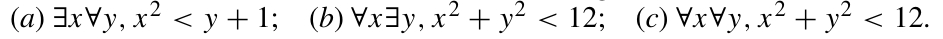
a) $\exists x \forall y \, (x < y + 1)$ → Benar (True)
Kita coba pilih $x = 1$. Sekarang kita periksa apakah $1 < y + 1$ bernilai benar untuk semua $y \in \{1, 2, 3\}$:
- Untuk $y = 1$: $1 < 1 + 1 \implies 1 < 2$ (Benar)
- Untuk $y = 2$: $1 < 2 + 1 \implies 1 < 3$ (Benar)
- Untuk $y = 3$: $1 < 3 + 1 \implies 1 < 4$ (Benar)
b) $\forall x \exists y \, (x^2 + y^2 < 12)$ → Benar (True)
Untuk setiap pilihan $x \in \{1, 2, 3\}$, kita cari apakah ada $y \in \{1, 2, 3\}$ yang memenuhi. Kita dapat membuktikannya dengan selalu memilih $y = 1$:
- Uji $x = 1$: $1^2 + 1^2 = 2 < 12$ (Benar)
- Uji $x = 2$: $2^2 + 1^2 = 5 < 12$ (Benar)
- Uji $x = 3$: $3^2 + 1^2 = 10 < 12$ (Benar)
c) $\forall x \forall y \, (x^2 + y^2 < 12)$ → Salah (False)
Pernyataan ini menuntut seluruh kombinasi pasangan $(x, y)$ memenuhi kriteria.
Counterexample: Pilih $x = 2$ dan $y = 3$.
$$2^2 + 3^2 = 4 + 9 = 13 \not< 12$$
Karena ada minimal satu pasangan yang tidak memenuhi, pernyataan universal ganda ini bernilai salah.
Misalkan $A = \{1, 2, \dots, 9, 10\}$. Perhatikan setiap kalimat berikut. Jika kalimat tersebut merupakan pernyataan, tentukan nilai kebenarannya. Jika kalimat tersebut merupakan fungsi proposisional, tentukan himpunan kebenarannya.
(a) $(\forall x \in A)(\exists y \in A)(x + y < 14)$
(b) $(\forall y \in A)(x + y < 14)$
(c) $(\forall x \in A)(\forall y \in A)(x + y < 14)$
(d) $(\exists y \in A)(x + y < 14)$
(a) Kalimat ini adalah pernyataan (statement), karena seluruh variabel ($x$ dan $y$) diikat oleh kuantor.
Nilai Kebenaran: Benar (True). Untuk setiap $x \in A$, kita bisa selalu memilih $y = 1 \in A$ sebagai pasangannya. Nilai maksimum $x + y$ adalah ketika $x = 10$, dan $10 + 1 = 11 < 14$ (Benar).
(b) Kalimat ini adalah fungsi proposisional dari variabel bebas $x$, karena variabel $x$ tidak memiliki kuantor di depannya.
Himpunan Kebenaran: $\{1, 2, 3\}$. Supaya kalimat bernilai benar untuk semua $y \in A$, nilai $x$ harus aman dipasangkan dengan nilai $y$ terbesar ($y = 10$).
$$x + 10 < 14 \implies x < 4$$
Nilai bilangan asli di $A$ yang kurang dari 4 adalah $\{1, 2, 3\}$.
(c) Kalimat ini adalah pernyataan, karena variabel $x$ dan $y$ telah dikuantifikasi.
Nilai Kebenaran: Salah (False). Kita cari penyangkalnya (counterexample). Jika kita memilih $x = 8$ dan $y = 9$ (keduanya di $A$), maka $8 + 9 = 17 \not< 14$.
(d) Kalimat ini adalah fungsi proposisional dari variabel bebas $x$.
Himpunan Kebenaran: Himpunan $A$ itu sendiri $\{1, 2, \dots, 10\}$. Untuk setiap $x \in A$, kita selalu bisa memilih $y = 1 \in A$ agar $x + y < 14$. Bahkan jika kita mengambil $x$ terbesar ($x = 10$), $10 + 1 = 11 < 14$ tetap bernilai benar. Maka seluruh anggota di $A$ memenuhi kriteria $x$.
Tentukan nilai kebenaran dari setiap pernyataan berikut jika domain untuk semua variabel terdiri dari semua bilangan bulat ($\mathbb{Z}$):
a) $\forall n \exists m \, (n^2 < m)$
b) $\exists n \forall m \, (n < m^2)$
c) $\forall n \exists m \, (n + m = 0)$
d) $\exists n \forall m \, (nm = m)$
e) $\exists n \exists m \, (n^2 + m^2 = 5)$
f) $\exists n \exists m \, (n^2 + m^2 = 6)$
g) $\exists n \exists m \, (n + m = 4 \land n - m = 1)$
h) $\exists n \exists m \, (n + m = 4 \land n - m = 2)$
i) $\forall n \forall m \exists p \, (p = (m + n)/2)$
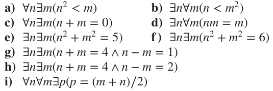
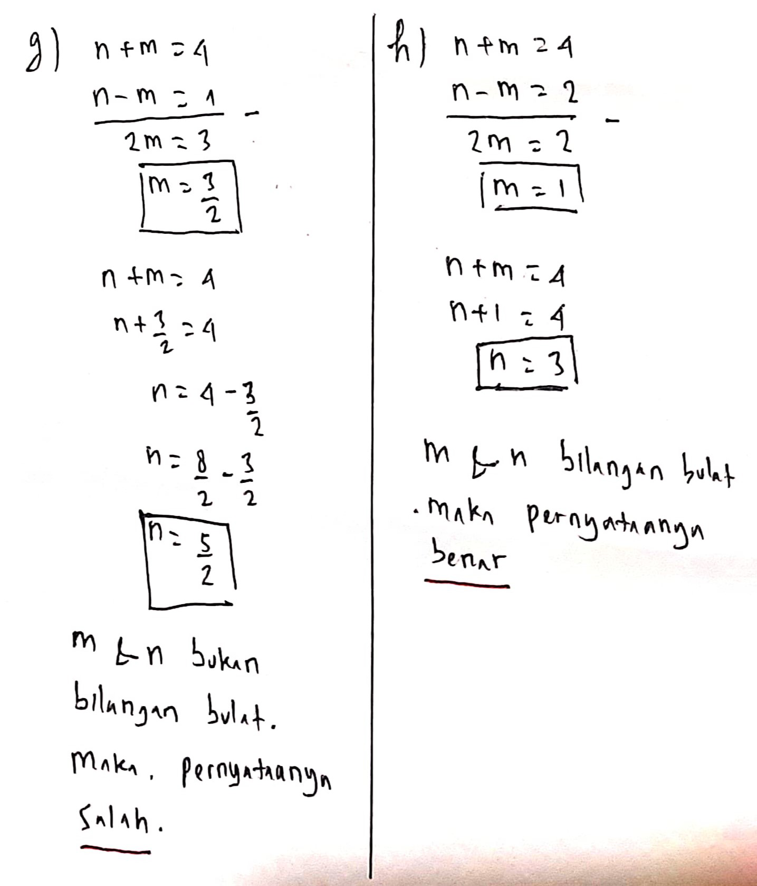
a) $\forall n \exists m \, (n^2 < m)$ → True (Benar)
Untuk bilangan bulat $n$ apa saja, kita bisa selalu memilih $m = n^2 + 1$. Jelas bahwa $n^2 < n^2 + 1$ selalu benar.
b) $\exists n \forall m \, (n < m^2)$ → True (Benar)
Kita cari satu bilangan bulat konstan $n$ agar selalu kurang dari kuadrat bilangan bulat $m^2$. Karena kuadrat bilangan bulat $m^2$ paling kecil adalah 0 (ketika $m=0$), kita dapat memilih bilangan negatif, misalnya $n = -1$. Pernyataan $-1 < m^2$ selalu bernilai benar untuk semua bilangan bulat $m$.
c) $\forall n \exists m \, (n + m = 0)$ → True (Benar)
Untuk bilangan bulat $n$ apa saja, kita bisa memilih inversnya $m = -n$ yang merupakan sesama bilangan bulat. Maka $n + (-n) = 0$ selalu bernilai benar.
d) $\exists n \forall m \, (nm = m)$ → True (Benar)
Kita cari nilai $n$ konstan sebagai identitas perkalian. Pilih $n = 1$. Maka $1 \cdot m = m$ benar untuk seluruh bilangan bulat $m$.
e) $\exists n \exists m \, (n^2 + m^2 = 5)$ → True (Benar)
Kita cari apakah ada solusi pasangan bulat yang jumlah kuadratnya 5. Kita dapat memilih $n = 1$ dan $m = 2$, di mana $1^2 + 2^2 = 1 + 4 = 5$.
f) $\exists n \exists m \, (n^2 + m^2 = 6)$ → False (Salah)
Nilai kuadrat dari bilangan bulat yang mungkin adalah $\{0, 1, 4, 9, \dots\}$. Kombinasi jumlah dari dua nilai kuadrat di atas yang lebih kecil dari 6 hanyalah:
- $0 + 0 = 0$
- $0 + 1 = 1$
- $1 + 1 = 2$
- $0 + 4 = 4$
- $1 + 4 = 5$
g) $\exists n \exists m \, (n + m = 4 \land n - m = 1)$ → False (Salah)
Jika kita menyelesaikan sistem persamaan linear:
$$(n + m) + (n - m) = 4 + 1 \implies 2n = 5 \implies n = 2.5$$
Maka $m = 1.5$. Karena $2.5$ dan $1.5$ bukan merupakan bilangan bulat ($\mathbb{Z}$), maka tidak ada solusi bulat yang memenuhi persamaan tersebut.
h) $\exists n \exists m \, (n + m = 4 \land n - m = 2)$ → True (Benar)
Selesaikan sistem persamaan linear:
$$(n + m) + (n - m) = 4 + 2 \implies 2n = 6 \implies n = 3$$
Maka $m = 1$. Karena $n=3$ dan $m=1$ merupakan bilangan bulat, solusi ini valid.
i) $\forall n \forall m \exists p \, (p = (m + n)/2)$ → False (Salah)
Rata-rata dari dua bilangan bulat tidak selalu berupa bilangan bulat.
Counterexample: Pilih $n = 1$ and $m = 2$.
Maka $p = (1 + 2)/2 = 1.5$. Karena $1.5 \notin \mathbb{Z}$, tidak ada elemen bulat $p$ yang memenuhi.
Carilah counterexample (contoh penyangkal yang membuat pernyataan salah) untuk pernyataan-pernyataan di mana domain terdiri dari semua bilangan bulat ($\mathbb{Z}$):
a) $\forall x \forall y \, (x^2 = y^2 \rightarrow x = y)$
b) $\forall x \exists y \, (y^2 = x)$
c) $\forall x \forall y \, (xy \geq x)$
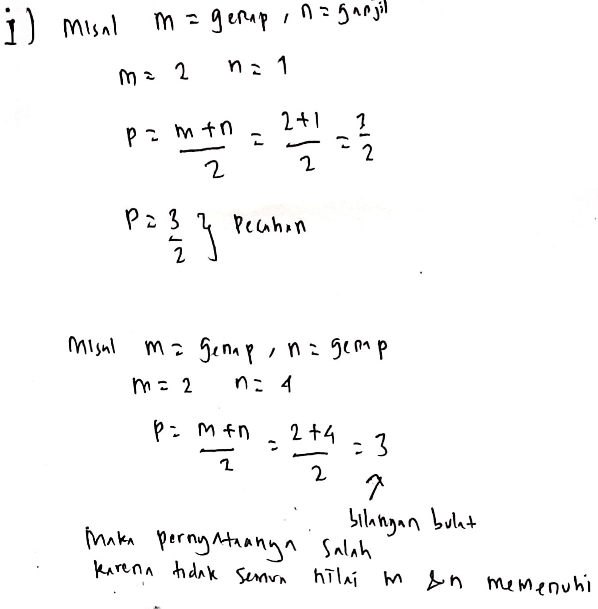
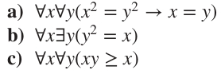
a) $\forall x \forall y \, (x^2 = y^2 \rightarrow x = y)$
* Penyangkal (Counterexample): Pilih $x = 2$ dan $y = -2$.
* Pembuktian: $2^2 = (-2)^2 \equiv 4$ (Bagian hipotesis bernilai benar), namun $2 \neq -2$ (Bagian konklusi salah). Implikasi $T \rightarrow F$ bernilai salah.
b) $\forall x \exists y \, (y^2 = x)$
* Penyangkal (Counterexample): Pilih $x = -4$ (atau bilangan negatif lainnya).
* Pembuktian: Tidak ada bilangan bulat $y$ yang memenuhi $y^2 = -4$, karena kuadrat dari bilangan bulat apa pun tidak pernah bernilai negatif.
c) $\forall x \forall y \, (xy \geq x)$
* Penyangkal (Counterexample): Pilih $x = 17$ dan $y = -1$.
* Pembuktian: $17 \times (-1) = -17$. Nilai $-17$ tidak lebih besar dari atau sama dengan $17$ (Pernyataan salah).
Tentukan nilai kebenaran dari pernyataan $\forall x \exists y \, (xy = 1)$ jika domainnya terdiri dari:
a) Bilangan riil bukan nol (non-zero real numbers).
b) Bilangan bulat bukan nol (non-zero integers).
c) Bilangan riil positif (positive real numbers).
a) Bilangan riil bukan nol → Benar (True)
Untuk setiap bilangan riil $x \neq 0$, kita selalu bisa memilih invers perkaliannya $y = 1/x$. Karena $x \neq 0$, maka $y$ juga merupakan bilangan riil bukan nol, dan $x \cdot (1/x) = 1$.
b) Bilangan bulat bukan nol → Salah (False)
Jika kita pilih $x = 2$, satu-satunya nilai $y$ agar $2y = 1$ adalah $y = 1/2 = 0.5$. Karena $0.5$ bukan merupakan bilangan bulat, maka pernyataan ini bernilai salah pada domain integer.
c) Bilangan riil positif → Benar (True)
Untuk setiap bilangan riil positif $x > 0$, pilih $y = 1/x$. Karena $x$ bernilai positif, maka $y = 1/x$ juga bernilai positif, dan hasil perkaliannya adalah 1.
Misalkan $P(m, n)$ adalah pernyataan "m membagi habis n" (dapat ditulis $m \mid n$), di mana domain untuk m dan n terdiri dari semua bilangan bulat positif ($\mathbb{Z}^+$). Tentukan nilai kebenaran dari masing-masing pernyataan ini:
a) $P(4, 5)$
b) $P(2, 4)$
c) $\forall m \forall n P(m, n)$
d) $\exists m \forall n P(m, n)$
e) $\exists n \forall m P(m, n)$
f) $\forall n P(1, n)$
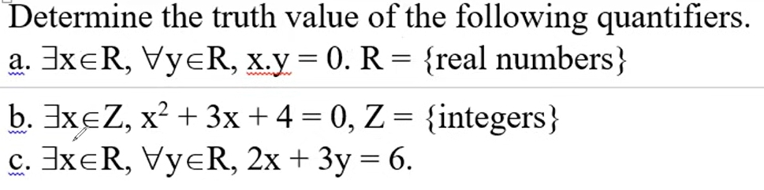
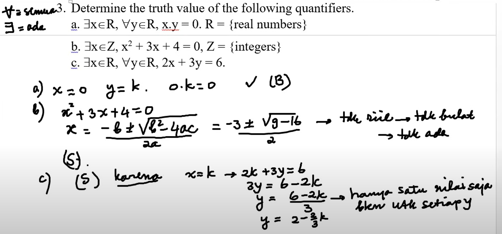
a) $P(4, 5)$ → Salah (False), karena 4 tidak membagi habis 5 ($5 / 4 = 1.25$, bukan bilangan bulat).
b) $P(2, 4)$ → Benar (True), karena 2 membagi habis 4 ($4 = 2 \times 2$).
c) $\forall m \forall n P(m, n)$ → Salah (False), karena tidak semua bilangan bulat positif membagi habis bilangan bulat positif lainnya (contoh counterexample: $P(4, 5)$ salah).
d) $\exists m \forall n P(m, n)$ → Benar (True)
* Arti: "Ada suatu bilangan bulat positif $m$ yang membagi habis semua bilangan bulat positif $n$."
* Pembuktian: Kita dapat memilih $m = 1$. Angka 1 selalu membagi habis semua bilangan bulat positif $n$ ($n = n \times 1$).
e) $\exists n \forall m P(m, n)$ → Salah (False)
* Arti: "Ada suatu bilangan bulat positif $n$ yang habis dibagi oleh semua bilangan bulat positif $m$."
* Pembuktian: Uji bilangan bulat positif $n$ apa saja. Kita selalu dapat menemukan nilai $m = n + 1$. Angka $n + 1$ tidak akan pernah bisa membagi habis $n$ (karena nilainya lebih besar dari $n$).
f) $\forall n P(1, n)$ → Benar (True), karena angka 1 membagi habis semua bilangan bulat positif $n$.
Tonton di YouTube (Mulai menit 37:59).